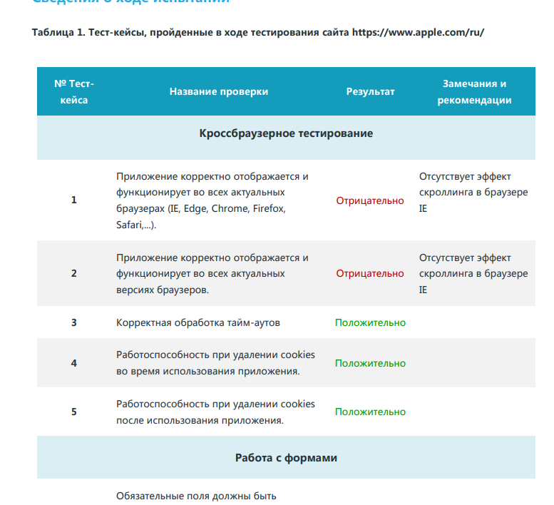

Тестирование информационных систем
Наши практические работы:
1 практическая
В данной практической работе ваша задача протестировать 3 готовых продукта. По окончанию тестирования вы должны предоставить отчет. Пример отчетности будет закреплен ниже. Допускается использование сторонних электронных ресурсов.
Посмотреть 1 работу
2 практическая
Необходимо протестировать ПО установленное на компьютере. В качестве образца для оформления отчета можно воспользоваться либо ранее предложенным отчетом, либо находящимся в данном задании.
Посмотреть 2 работу
3 практическая
В данной практической работе вам необходимо составить правила безопасности (Политику безопасности) , в отношении информации, для следующих категорий компаний: IT-компания занимающаяся разработкой системного ПО Государственной компании связанной с военно-промышленным комплексом Частная компания занимающаяся Аналитикой рынка товаров.(Консалтинговая компания)
Посмотреть 3 работу4 практическая
1.Даны натуральное число N и одномерный массив A1, A2, …, AN целых чисел. Получить массив, который отличается от исходного тем, что все нечетные элементы удвоены, а четные получены сложением собственного значения с первоначальным значением последующего нечетного.
Посмотреть 4 работу5 практическая
В Древней Греции (II в. до н.э.) был известен шифр, называемый "квадрат Полибия". Шифровальная таблица представляла собой квадрат с пятью столбцами и пятью строками, которые нумеровались цифрами от 1 до 5. В каждую клетку такого квадрата записывалась одна буква. В результате каждой букве соответствовала пара чисел, и шифрование сводилось к замене буквы парой чисел.
Посмотреть 5 работу6 практическая
Определить правильность даты, введенной с клавиатуры (.число - от 1 до 31, месяц - от 1 до 12). Если введены некорректные данные, то сообщить об этом
Посмотреть 6 работу7 практическая
На сайте должны быть реализованы следующие возможности: Возможность зарегистрироваться/войти на сайт Возможность добавлять/просматривать ваши работы (Отчеты по проведенным практикам) Генератор случайных чисел для определения варианта практической работы.
Посмотреть 7 работу